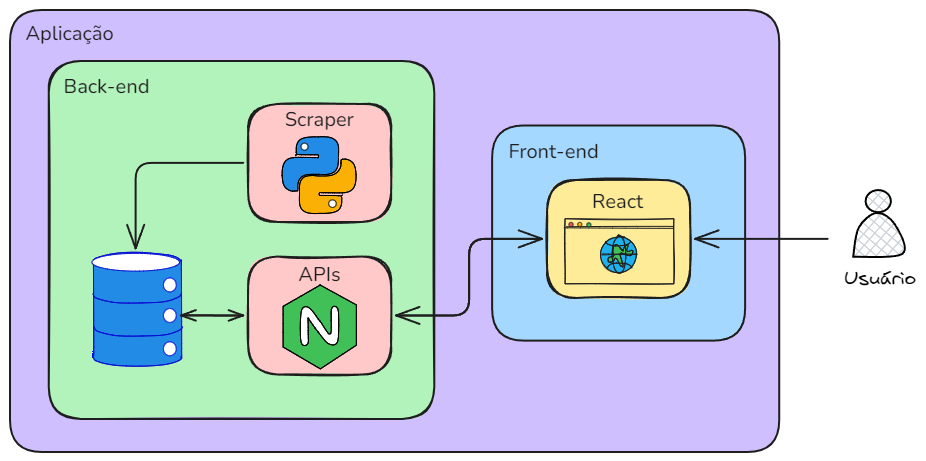

Arquitetura
Introdução
A arquitetura de software é o alicerce de qualquer sistema, representando as decisões fundamentais sobre a estrutura e organização de seus componentes. Ela define como diferentes partes do sistema interagem entre si e como essas interações sustentam as funcionalidades desejadas. Este documento apresentará as informações necessárias para entender a arquitetura e o funcionamento do nosso software.
Diagrama de arquitetura

Visão Geral
- O Usuário irá acessar nossa página
- Irá selecionar qual Estado deseja obter informações
- O usuário irá observar no mapa as informações que deseja
- O usuário decide se quer receber atualizações em seu e-mail da pesquisa (necessário ter conta)
Tecnologias
A nossa aplicação será desenvolvida em três partes principais, sendo elas:
- Front-end:
- React;
- Back-end:
- JavaScript;
- Python;
- NodeJS;
- Banco de Dados:
- MySql;
Front-End:
O front-end é a camada responsável pela interface do usuário, sendo a parte visível e interativa de um sistema. Ele conecta o usuário final às funcionalidades da aplicação, garantindo uma experiência fluida, intuitiva e visualmente agradável. Essa camada lida com a exibição de informações e a captura de entradas. Para a construção desta aplicação, será utilizado o React, uma biblioteca JavaScript amplamente adotada, conhecida por sua eficiência e flexibilidade no desenvolvimento de interfaces modernas e reutilizáveis.
Back-End:
O back-end é a camada que gerencia a lógica de negócios, processamento de dados e comunicação entre o front-end e o banco de dados. Ele é responsável por garantir que as funcionalidades do sistema sejam executadas de forma eficiente e segura, fornecendo as informações necessárias ao usuário e processando as ações realizadas na interface. Nesta aplicação, será utilizado o Node.js para o desenvolvimento da API, oferecendo alta performance e escalabilidade na comunicação entre as partes do sistema. Para complementar, será utilizada a linguagem de programação Python na implementação de scrapers, que serão responsáveis por coletar e processar dados, estes dados serão retirados do Programa de Queimadas do INPE, garantindo acesso a informações confiáveis e atualizadas sobre ocorrências de incêndios no território brasileiro.
Banco de Dados:
O banco de dados é responsável por armazenar e gerenciar as informações da aplicação de forma segura e eficiente. Para este projeto, será utilizado o MySQL, uma solução robusta e confiável, ideal para lidar com operações de leitura, escrita e atualização dos dados.
Tecnologias utilizadas
-
DevOps:
- Docker: Docker é utilizado para containerizar o ambiente de desenvolvimento e produção, garantindo consistência entre diferentes máquinas e facilitando a implantação de novas versões da aplicação.
-
Back-end:
- Node.js: Utilizado para construir APIs rápidas e escaláveis, aproveitando sua arquitetura baseada em eventos para gerenciar um grande número de requisições simultâneas.
- Python: Responsável pelo desenvolvimento de scripts e serviços de apoio, como processamento de dados e integração com outras ferramentas, aproveitando sua ampla gama de bibliotecas.
-
Front-end:
- React: Framework JavaScript utilizado para criar interfaces dinâmicas e responsivas, proporcionando uma experiência de usuário interativa e fluida.
-
Banco de Dados:
- PostgreSQL: Banco de dados relacional utilizado para armazenamento confiável e eficiente, com suporte a consultas complexas e segurança robusta.